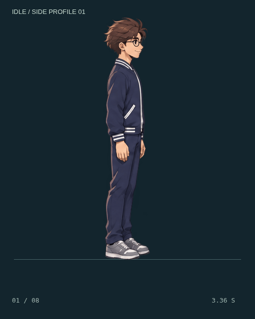
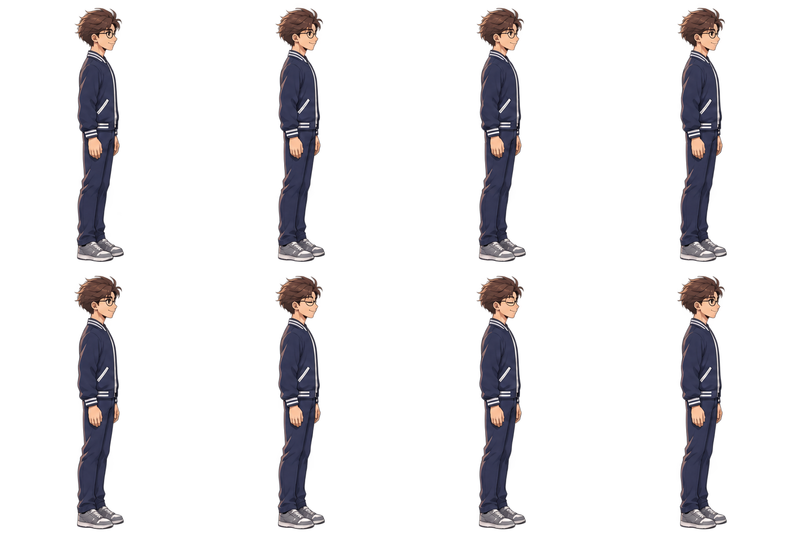

DỊ MÔN / IDLE PROFILE TRIAL 01
Idle — nghỉ và thở nhẹ.
Nhìn ngang sang phải, tay thả tự nhiên, hai chân đặt sàn. Một nhịp thở nhỏ ở ngực và vai, kèm chuyển động nhẹ ở tay, tóc và gấu áo. Chớp mắt một lần trong mỗi vòng khoảng 3,4 giây.

Xem gần mặt và chớp mắt


Spritesheet 4 × 2
